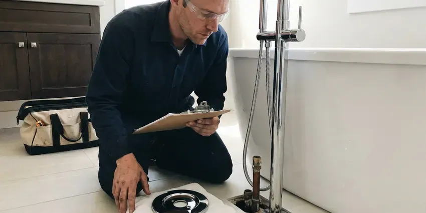
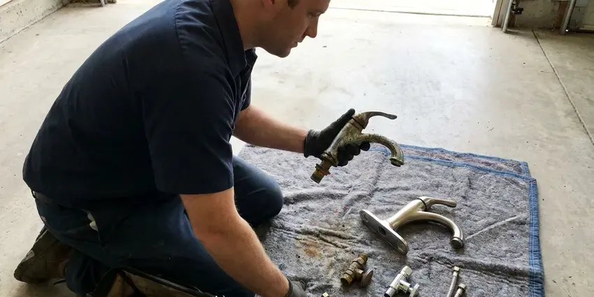

Grease Trap Repair in Millsboro, DE
Commercial and residential grease trap repair in Millsboro, DE, usually done the same day.
- Licensed and Insured
- After-Hours Service
- Same-Day Commercial Service
- Written Estimates

Grease Trap Backing Up in Millsboro, DE?
Restaurant or home kitchen, we can usually be there the same day.
Commercial Grease Trap Repair in Millsboro, DE
GNV Plumbing repairs grease traps and interceptors for kitchens across Millsboro, DE, from a 20-gallon unit under a bar sink to a 1,500-gallon concrete tank under the parking lot. Most failures come down to a few parts. Baffles, tees, lids and gaskets wear out, and flow control fittings go missing. We find which one and fix it.
Some of what we do:
- Restore spalled concrete interceptor walls
- Replace corroded trap components
- Repair or replace broken interceptor baffles

Additional Kitchen Plumbing Services in Millsboro, DE
Our kitchen plumbing services in Millsboro, DE cover sinks, disposals, dishwashers, and grease traps so your kitchen stays clean, safe, and fully functional.


Customers
Why Choose GNV Plumbing for Grease Trap Repair in Millsboro, DE?
Fines for grease discharge add up quickly, and repeat violations can lead to a required interceptor upgrade. Catching a small problem now costs far less. We offer scheduled inspections alongside emergency repair, with a written report each time that lists the condition of the baffles, tees, lid and gasket. Keep those reports on file.
- Prevent Backups, A working trap keeps grease out of your drain lines and sewage off the kitchen floor.
- Accurate Diagnosis, We pump and inspect before quoting, so we know exactly what failed.
- Preventive Advice, We measure the trap and suggest a pumping schedule that fits your kitchen.
Citywide Coverage
Emergencies do not pick a convenient address. Our trucks start the day spread out, not parked at one shop. That way the nearest plumber with a jetter takes your call, even if your kitchen is at the far end of an industrial park.
Experienced Team
Both trap types, hydromechanical and gravity, show up on most of our weekly schedules. Working on both every week keeps our plumbers fluent in each kind. A tech who only pumped traps would miss a missing flow control fitting or a corroded crossover, and our people are plumbers first, trained to read the whole system before picking up a wrench. You get the reasons, not just the bill.
Safety-First Approach
Traffic-rated covers belong anywhere a car or truck can roll over an interceptor. Light-duty lids crack under a garbage truck. We check the load rating on every outdoor lid we work on and replace undersized covers with H-20 rated castings or composite lids, because a broken lid over a deep tank is a real fall hazard. We will mark it unsafe until replaced.
Trusted Certified Millsboro Plumbing Services Professionals
At GNV Plumbing, we are proud to offer certified plumbing services throughout Millsboro, DE. Credentials matter in this trade. Every repair, install and maintenance visit follows strict safety and quality rules, and the plumbers doing the work carry recognized industry credentials.
Call Us Now PHCC Plumbing Contractor Recognition
PHCC Plumbing Contractor Recognition Better Business Bureau (BBB) Accreditation
Better Business Bureau (BBB) Accreditation Angi Certified Pro
Angi Certified Pro ISO 9001 Quality Management Certification
ISO 9001 Quality Management CertificationDependable Grease Trap Repair in Millsboro, DE
Commercial Grease Trap Repair in Millsboro
Restaurants, school cafeterias, hospital kitchens and bakeries all push more grease than a small trap can hold. Undersized traps fail in predictable spots. The inlet tee clogs, the outlet tee gets coated, and grease starts showing up in the sewer manhole down the street, which is usually how the city finds out before the owner does. We repair what broke, then tell you straight whether the unit is sized for your volume.

Commercial Grease Interceptor Repair in Millsboro, DE
In-ground gravity interceptors run from about 500 gallons to several thousand, usually precast concrete with two compartments. Over the years, hydrogen sulfide gas softens the concrete above the water line. We pump the tank, inspect the walls and the crossover, and repair spalled concrete with a cementitious patch or an epoxy liner rated for that service. Entry follows confined space rules.
Inlet and Outlet Tee Repair in Millsboro, DE
Tees are cheap parts with an outsized job. The inlet tee sends flow down below the grease layer. The outlet tee draws water from low in the tank, well under the grease cap, so if it breaks off or someone removes it during pumping, floating grease walks right out to the sewer. New tees go in as Schedule 40 PVC, cut to the drop length the manufacturer or local code specifies.
Grease Line Clog Repair in Millsboro, DE
Lines downstream of the trap should stay clean if the trap is working. Grease past the outlet is a red flag. We jet the downstream run to the property line or the sewer tap, then camera it to confirm the pipe is clear and to document any cracked or sagging sections for a repair quote. Clearing the pipe without fixing the trap just resets the clock.
Hydro-Jetting for Grease Trap Repair in Millsboro
A cable machine punches a hole through grease. Jetting actually scours the pipe wall clean. We run a commercial jetter at 3,000 to 4,000 PSI through the line feeding the trap and the line leaving it, working from the cleanout toward the main. With old cast iron, we turn the pressure down and keep a camera on it, since a thin wall can blow out.
Grease Interceptor Clog Removal in Millsboro
Grease does not stay liquid for long once it cools in a pipe. It sets up like candle wax on the crown of the line. Chemical drain openers soften it for a day and then it re-forms farther downstream, sometimes past the trap entirely, where it becomes a sewer problem instead of a kitchen problem. A jetter actually takes it out of the line.
Grease Trap Repair vs Replacement Cost in Millsboro, DE
Age and material decide most repair versus replace calls. A 25-year-old steel trap with rust holes is done. A plastic or fiberglass trap with a broken baffle is usually worth fixing, and a concrete interceptor with sound walls and a bad riser almost always is, since replacing a buried tank means excavation and several days closed. We put both options in writing with a price on each.

Emergency Grease Trap Repair in Millsboro
Mid-shift backups usually come from a plugged inlet or a trap that is overdue for pumping. Pump-out and an inlet cleaning often take less than two hours on site. Our trucks carry common lid gaskets, tees, flow control fittings and test plugs, so a broken part does not always mean a second trip and another lost night. Rush visits take priority.
Grease Trap Repair Near Me in Millsboro, DE
Local plumbers in Millsboro, DE see what the weather does over the years to buried tanks and the pipe that runs in and out of them. Humidity causes condensation on cold water lines and toilet tanks, which can slowly damage floors and encourage mold. Expansion and contraction loosen fittings and open hairline cracks at the trap inlet and outlet. Every repair call includes a look at those joints.
Nearby crews matter most when the trap is outside under the parking lot. Interceptor work needs a vacuum truck and room to park it. We line up the pump truck and the repair crew for the same morning, so the lot is open again before the lunch rush starts. We can do it overnight if that suits you better.
GNV Plumbing at a Glance
- Licensed and insured plumbers serving Millsboro, DE
- 24/7 emergency service with same-day scheduling
- Clear written estimates, no hidden fees
- 4.8-star rated by 849+ Delaware customers
Millsboro Map
Millsboro Information
- Population
- 7,637
- Area codes
- Local
- Service area
- Millsboro and communities within 40 miles
- Nearby
- Georgetown, Seaford, Milford, Dover
Settling ground and heavy traffic stress buried interceptors, risers and lid seals, so fixing them early keeps commercial kitchens in Millsboro, DE compliant and odor free. Sandy soil drains quickly but can shift and settle, which may stress buried sewer lines and water service pipes over time.
Talk to a Plumber
Reach out to GNV Plumbing for honest, reliable plumbing from people who know the trade in Millsboro, DE.
Our Specialized Plumbing Services in Millsboro, DE
At GNV Plumbing, you get every kind of plumbing service from one company across Millsboro, DE. From leak detection to full system installs, our team works fast and charges fair prices on homes and commercial properties alike. Take a look at our core services below:


Bathroom Plumbing near Millsboro



Millsboro plumbing replacement specialists


What to Expect From a Grease Trap Repair in Millsboro, DE
From your first call, we work toward a quick diagnosis in Millsboro, DE.
Request a Quote
Call (302) 406-6354 and tell us what the trap is doing. We set a time for a plumber to visit your Millsboro location.
On-Site Diagnosis
The plumber pumps the trap if needed and inspects every part inside it. A camera goes down the lines when the problem is past the trap.
Expert Repair
Once you approve the estimate, we make the repair with the right parts. Then we flow test the trap before we leave your Millsboro kitchen.
Frequently Asked Questions About Grease Trap Repair in Millsboro
Minor clog clearing usually runs $200 to $400. Fixing a broken baffle or a big leak usually lands between $500 and $1,500. Concrete interceptor repairs, riser replacements and anything that needs excavation can go higher, and we give you a written estimate after inspecting the trap so you are not working from a phone guess. Emergency calls may cost more after hours.
Yes, including hydromechanical traps, automatic grease removal units like the Thermaco Big Dipper, and gravity interceptors. We work on Zurn, Watts, Schier and others.
We can, though off hours are usually better so the kitchen is not working around us. Emergencies get handled as soon as we can get there.
Strainers in every sink and floor drain catch most of the solids before they reach the trap. Have the dish crew wipe pans into the trash before they hit the sink. Keep pumping on a fixed schedule, and book an inspection once a year so a cracked lid or loose tee gets caught early. Catching it early keeps the repair cheap.
Grease buildup from overdue pumping causes most failures. Corrosion, impact damage and poor installation account for the rest.
Yes. Our labor is warrantied, and parts carry the manufacturer warranty on top of that. The exact terms are written on your invoice, so you know how long each part is covered.
Plan on a few hours for indoor traps. Outdoor interceptor repairs can take a day or more if excavation or concrete work is involved.
It can. Grease in the sewer or a failed inspection often brings a violation notice or a fine.
Hear From Customers Who Hired Our Plumbing Experts

Emily R.
The shutoff valve under our kitchen sink snapped off in my hand on a Sunday morning. GNV Plumbing had someone out by early afternoon. He replaced both angle stops with quarter turn valves and showed me where our main shutoff was, which I honestly did not know.
Plumbing Repair · Georgetown, DEMegan L.
Our upstairs tub drained so slowly that every shower turned into a bath. GNV Plumbing pulled a wad of hair out of the stopper and then snaked the line past the trap. Three months later it still drains fast.
Drain Cleaning · Milford, DERachel N.
Hard water was leaving white crust on every faucet and our dishwasher was struggling. The tech tested the water, recommended a softener sized for a family of five, and installed it with a bypass valve in one afternoon. The spots on our glasses are gone.
Water Softener · Milford, DE
Mark T.
The floor drain in our office break room backed up every few weeks. The plumber ran a cable, then put a camera down and found roots at a joint about thirty feet out. Seeing it on the screen made the decision easy.
Drain Cleaning · Smyrna, DEBrian W.
I smelled gas behind the dryer and called right away. The plumber found a corroded flex connector, replaced it, and pressure tested the whole line before turning the gas back on. He let me watch the gauge hold steady for fifteen minutes.
Gas Line Repair · Georgetown, DE
Marcus H.
Grease from the fryer line kept clogging the kitchen drain at my diner. GNV Plumbing hydro jetted the line after closing, showed me the buildup on camera, and set us up on a quarterly cleaning so it does not catch us on a Friday again.
Drain Cleaning · Middletown, DE